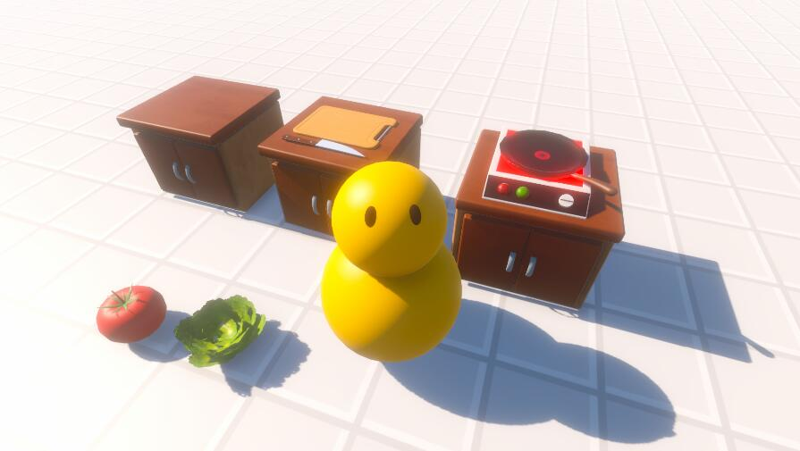
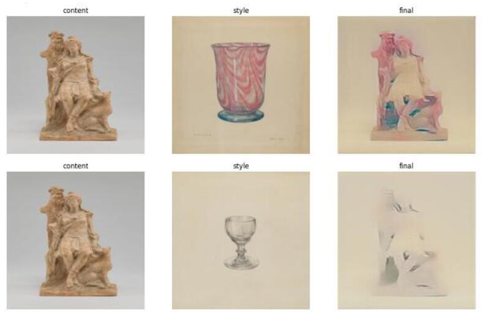
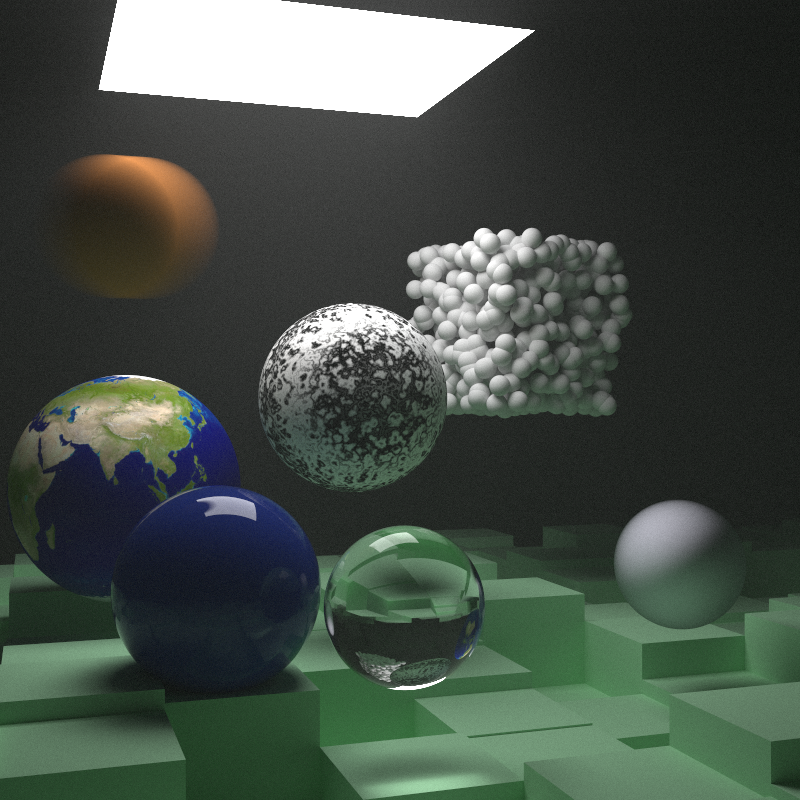
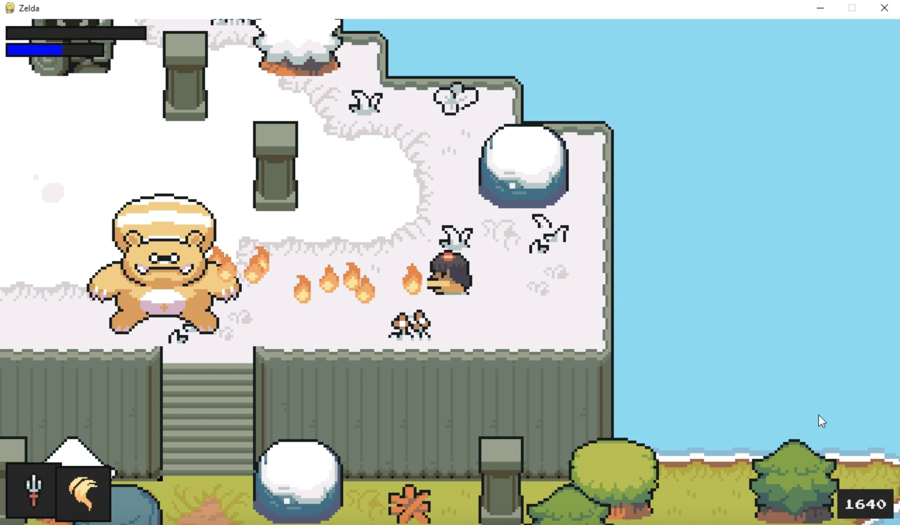
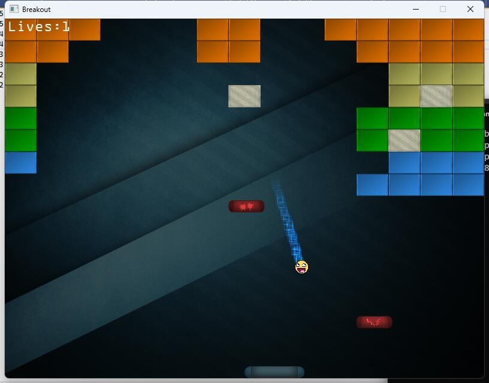
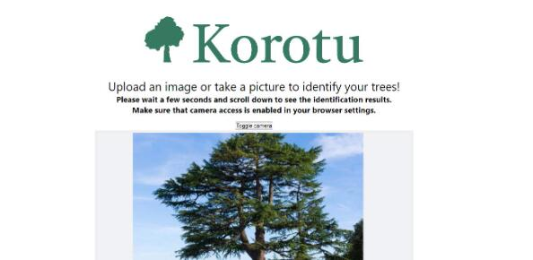
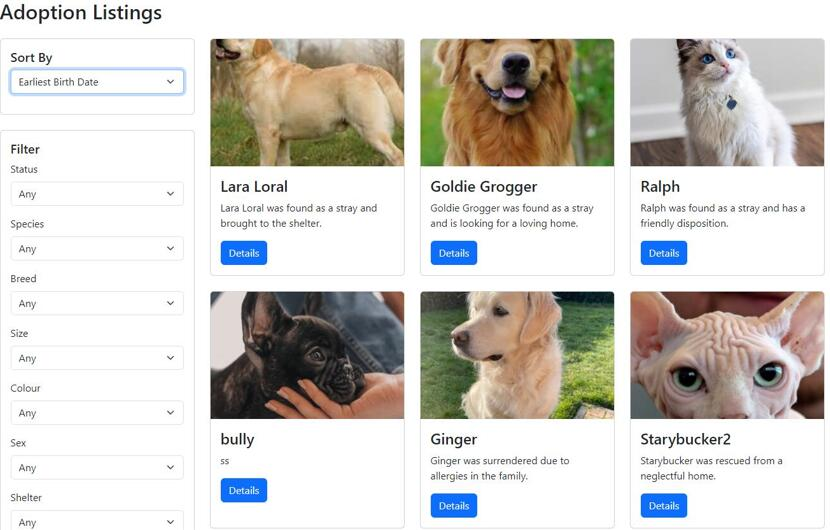
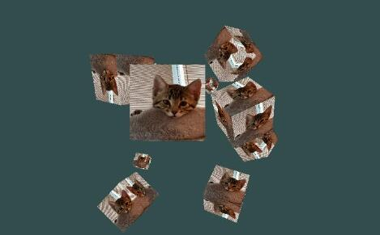

Physics-based Animation
Physics-based Animationlibigl, C++
Exploring physics-based animation using libigl.
Github
Rendering Developer of UTMIST (Sept. 2023 to May 2024)
Email: chenzheng.chen@mail.utoronto.ca
Github: github.com/cccccz
Phone: +1 365 993 0207

Kitchen Chaos Unity Replica(In Progress!!)
Unity, C#
Replication of one level of the Kitchen Chaos game using the Unity3D.
Github

Neural Art Style Transfer
PyTorch, Python
Exploring the possibility of neural style transfer on different CNN architechtures. NST captures the features from one picture and applies it to the other.
Github

Physics-based Path Tracer
C++
A ray tracing program supporting lots of objects using bounded volume hierachy and parallelism.
Github

PyZelda
Python, Pygame
A 2D RPG pixel game inspired by Zelda and Dark Souls
Github

Breakout Game
C++, OpenGL
An enhanced version of the classic arcade game 'Breakout', utilizing OpenGL for graphical rendering on the GPU
Github

Korotu
Heroku, ReactJS
A prototype for a plant identification website, collaborated with Korotu Inc.
Github

Petpal
React, Django
A dynamic pet adoption website, integrating Django backend and React frontend.
Github

My Cat in Spinning Boxes
OpenGL, C++
A dynamic 3D scene of spinning boxes with cat imagery, rendered using OpenGL.
Github
Physics-based Animation
libigl, C++
Exploring physics-based animation using libigl.
Github
I'm a highly-moptivated software developer with the repertoire to take on new challenges. I love arts and I am self-learning game development and animation.